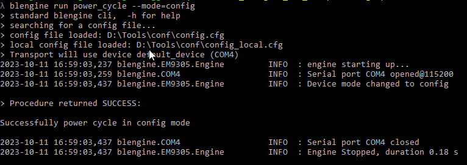

Product Lifecycle
Summary
To ensure a proper integration of product lifecycle in BLEngine, an HCIEngine has implicit support for device mode through a engine.enable_device_mode_support() method, which will bind the startup events to the new device_mode attribute.
The dictionary device_mode_events shown below contains the list of events that are sent over the transport when the related mode is entered. It has to be mentioned that since the active mode means entering the end user application, this event might not be sent if it is not explicitely sent in this application.
device_mode_events = {
"ENTER_ACTIVE_MODE": "active",
"ENTER_CONFIGURATION_MODE": "config",
"ENTER_EMCORE_MODE": "emcore",
"ENTER_PRODUCTION_TESTS_MODE": "prodtest",
"ENTER_BOOTLOADER_MODE": "bootloader",
"ENTER_EMSHI_MODE": "emshi",
}
When a device is instructed to enter a specific mode, it is recommended to wait for the related event reception which will confirm that the device has actually entered the requested mode.
To achieve this, the HCiEngine now provides a new engine.device_mode_event threading Event, which can be used to wait on mode event easily as it is shown in the code snippet below:
# clear the event state
engine.device_mode_event.clear()
... do some stuff ...
# wait 1 seconds for a startup event
if engine.device_mode_event.wait(1):
print("got it ! now in mode : %s" % engine.device_mode)
else:
print("startup event missed")
Procedures
The procedures listed below are introduced along with the lifecycle control.
restart
Restart the device in any mode in the following values :
default
active
emcore
bootloader
config
Usage
blengine run restart --mode=config
The default start-up mode is to execute the end user application into the flash memory (it has to be programmed first). It is the so called active mode.
Usage in code :
from blengine.hci.procedures.EMSystem import restart
restart(engine, mode="config")
power_cycle
Power Cycle the device (DVK needed) with the following value : default, config
blengine run power_cycle --mode=config
This command will produce the following output:

Note that the value is to start in active mode. In this mode, the main user application is started. Depending if it sends back the HCI “Active mode” event or not, the out of the following command…
blengine run power_cycle
…can end-up with the following result:
nvm_dump
Dump the memory in a human readable format:
blengine run nvm_dump -h
The dump can be redirected to an output file like in this example:
blengine run nvm_dump --file=out_data.txt
Read firmware headers
It is possible to identify the firmware images stored in the flash memory. Since each firmware image has its own header stored along with its image, it is possible to scan the flash memory and display what is found with the following command:
blengine run get_fw_headers
A result example could be the following:
This example shows that the device flash memory contains one firmware image of type 3 (user application). Even if the firmware image is programmed starting at address 0x302000, the entry point is located at address 0x302028. In between is located the image header that contains the exposed informations.